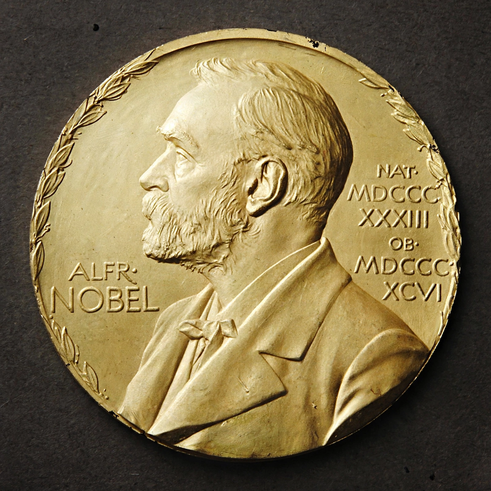

| Nobel Memorial Prize in Economic Sciences | |
|---|---|
| Awarded for | Outstanding contributions to economics |
| Location | Stockholm, Sweden |
| Presented by | Royal Swedish Academy of Sciences |
| Reward | 11 million SEK (2023) |
| First awarded | 1969 |
| Website | nobelprize.org |
The Nobel Memorial Prize in Economic Sciences, officially the Sveriges Riksbank Prize in Economic Sciences in Memory of Alfred Nobel (Swedish: Sveriges riksbanks pris i ekonomisk vetenskap till Alfred Nobels minne), is an award for outstanding contributions to the field of economics. It was established in 1968 by a donation from Sweden's central bank, Sveriges Riksbank, on the bank's 300th anniversary, and was first awarded in 1969.
The prize is not one of the five Nobel Prizes created by Alfred Nobel's 1895 will, and technically is not a Nobel Prize; Nobel's descendants and some laureates, including Friedrich Hayek, have criticised it. Nevertheless it is administered by the Nobel Foundation, selected by the Royal Swedish Academy of Sciences under the same procedures, and presented at the same ceremony in Stockholm on 10 December, the anniversary of Nobel's death.
The Economics Prize Committee of the Academy invites nominations from qualified scholars worldwide, evaluates candidates over the year, and recommends laureates to the Academy, which elects the recipients in mid-October. As with the other prizes, no more than three individuals may share the award, and it is not given posthumously except where the laureate dies after the announcement.
The first laureates were Ragnar Frisch and Jan Tinbergen (1969), for econometric modelling. The youngest laureate is Esther Duflo (2019, aged 46); the oldest was Leonid Hurwicz (2007, aged 90). Elinor Ostrom (2009) was the first woman laureate; by 2023 three women had won, including Claudia Goldin (2023), recognised for work on women's earnings and labour-market outcomes. Notable laureates include Paul Samuelson (1970), Milton Friedman (1976), Robert Lucas (1995), Amartya Sen (1998), Daniel Kahneman (2002, a psychologist), Richard Thaler (2017) and Paul Romer (2018).
Critics have questioned the prize's scientific status, alleged ideological bias — particularly toward the University of Chicago school in its early decades — and the prestige it confers on economics relative to other social sciences. Supporters reply that the selections have broadened considerably to cover behavioural, institutional, development and experimental economics.